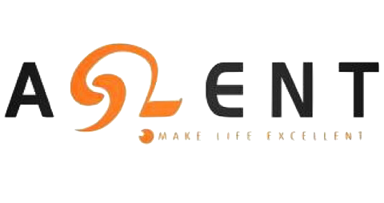

Experience
MediaTek USA
May 2021 - Present
San Diego, CA
Software Development Intern
Analyzed performance on computer cache and improved it by using machine learning algorithms.
- Utilized perceptron learning algorithm on cache reuse prediction and constructed a cache predictor in Python, which improved the prediction accuracy in the cache and reduced the cache miss rate.
- Reduced 24% of cache miss rate compared to LRU cache and improved 6% of the cache access performance over LRU cache.
Aslent Technology
Mar. 2020 - Nov. 2020
Taiwan
Software Engineer
Cooperated with hardware engineers and customers, building software architectures and embedded systems.
- Engineered a wafer auto-storage system to arrange the wafer and monitor the status automatically in Python, which minimized labor cost by 20% and risks of operation by 30%.
- Built a controller in C++ integrating different types of readers into one device to reduce hardware cost by 30%.
Taiwan Semiconductor Manufacturing Company
Sept. 2014 - Sept. 2018
Taiwan
Backend Software Engineer
Constructed and maintained automated production systems
- Built and Boosted backend services on semiconductor process automated systems by using C++, which achieved full process automation and conserved labor cost by 10% while improving process yield by 23%.
- Established a report auto-generation system in Python, which reduced labor costs by 12%.
Skills
Programming languages
Python, C/C++, Java, Javascript, Shell Script, MATLAB, HTML, CSS
Technologies
Node.js, Express.js, React.js, Bootstrap, GIT, CircleCI, Material UI, Spring Boot, Design patterns
Database
MySQL, PostgreSQL